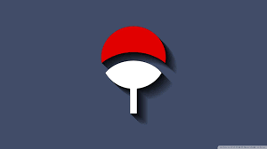

The Uchiha Clan traces its roots back to Indra Otsutsuki, the elder son of Hagoromo Otsutsuki, the Sage of Six Paths. Indra inherited his father's powerful chakra and exceptional visual abilities. His descendants eventually became known as the Uchiha Clan, one of the most powerful families in the ninja world.
For many generations, the Uchiha Clan fought against the Senju Clan. Both clans were hired by different groups during times of war and became famous for their strength. The constant battles caused great suffering and loss on both sides.
After years of conflict, Madara Uchiha and Hashirama Senju decided to end the cycle of war. Together they founded Konohagakure, also known as the Hidden Leaf Village. Their dream was to create a peaceful place where children would not have to grow up on the battlefield.
Although the Uchiha helped create the village, tensions gradually developed between the clan and the village leadership. Many members of the clan felt isolated and believed they were not treated fairly. This distrust continued to grow over time.
As tensions reached their peak, some members of the Uchiha Clan planned a coup against the village. To prevent a civil war, Itachi Uchiha was given a secret mission to eliminate the clan. The tragic event became known as the Uchiha Massacre and left Sasuke Uchiha as one of the few surviving members.
Despite its tragic downfall, the Uchiha Clan remains one of the most influential clans in ninja history. Their powerful abilities, legendary members, and important role in the history of Konoha continue to make them one of the most respected clans in the Naruto universe.